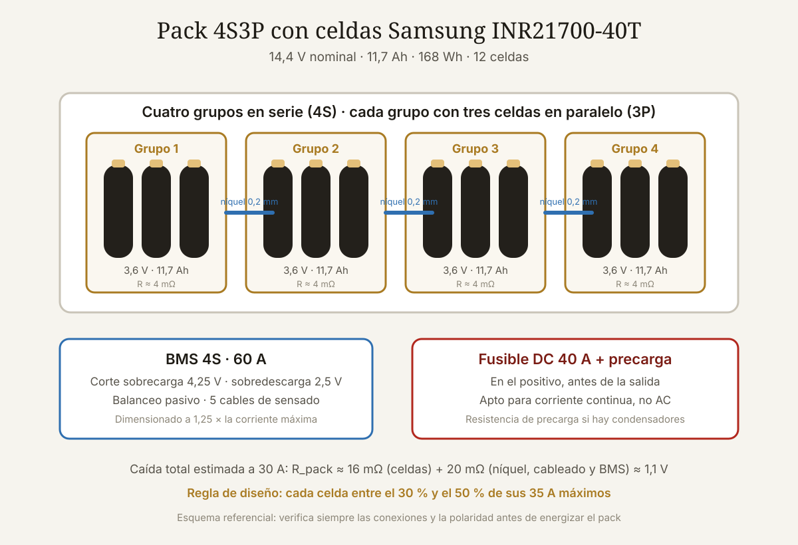

Qué cubre esta guía
- Qué es la 21700 y por qué reemplaza a la 18650
- Las especificaciones reales del datasheet
- Energía vs. potencia: el cálculo que evita sorpresas
- 40T frente a las otras 21700 de alta descarga
- Cómo dimensionar tu pack serie-paralelo
- Soldadura por puntos y cálculo de la cinta de níquel
- BMS, fusibles y protección del pack
- Cómo detectar celdas falsificadas o recicladas
- Gestión térmica y montaje del pack
- Cuándo la 40T es la elección correcta (y cuándo no)
- Conclusión
- Preguntas frecuentes
Qué es la 21700 y por qué reemplaza a la 18650
El nombre 21700 no es un modelo comercial: es una descripción dimensional. Significa 21 mm de diámetro y 70,0 mm de largo, en formato cilíndrico. Del mismo modo, la clásica 18650 mide 18 mm × 65 mm. El salto de formato parece menor, pero la geometría manda: el volumen de un cilindro crece con el cuadrado del radio, de modo que una 21700 encierra aproximadamente un 40 % más de volumen activo que una 18650 con solo 3 mm más de diámetro.
Ese volumen extra se traduce en dos ventajas simultáneas que normalmente están en conflicto: más energía (más material activo por celda) y más potencia (mayor superficie de electrodo, por lo tanto menor densidad de corriente y menor resistencia interna). Por eso el formato 21700 se impuso en herramientas eléctricas, patinetes, bicicletas eléctricas, packs de vehículos y proyectos maker de alta demanda.
La Samsung INR21700-40T es la celda que popularizó el formato en el mundo DIY. Las siglas cuentan la historia: INR indica química de níquel-manganeso-cobalto (NMC) con cátodo de óxido; 40 viene de los 4.000 mAh de capacidad estándar; y la T designa la familia de alta descarga ("Tool", pensada para herramientas eléctricas). Existen variantes posteriores —40T3, 40T5— con especificaciones prácticamente equivalentes y diferencias de proceso de fabricación.
Las especificaciones reales del datasheet
Antes de diseñar nada, los números oficiales de la hoja de datos de Samsung SDI. Cualquier cifra que un vendedor te dé por encima de estas es marketing:
| Parámetro | Valor oficial | Qué significa en la práctica |
|---|---|---|
| Capacidad estándar | Mín. 4.000 mAh | Medida descargando a 0,2C (800 mA) hasta 2,5 V. Es el "mejor caso". |
| Capacidad nominal | Mín. 3.900 mAh | Medida a 10 A. Es la cifra que debes usar para dimensionar autonomía real. |
| Voltaje nominal | 3,6 V | Voltaje promedio ponderado en la descarga. Usarlo para calcular Wh. |
| Voltaje de carga | 4,20 V | Límite absoluto. Cargar por encima degrada y es peligroso. |
| Corte de descarga | 2,5 V | Por debajo hay daño permanente al ánodo de cobre. |
| Descarga continua máx. | 35 A (sin corte térmico) 45 A (con corte a 80 °C) | 35 A es el límite de diseño seguro. Los 45 A exigen monitoreo de temperatura. |
| Carga estándar / rápida | 2 A / 6 A | 2 A = 0,5C, ~3 h. 6 A = 1,5C, ~70 min con más desgaste. |
| Impedancia AC (1 kHz) | ≤ 12 mΩ | El dato clave para calcular caída de tensión y calor. |
| Peso | Máx. 70 g | Herramienta de detección de falsificaciones (ver más abajo). |
| Dimensiones | Máx. 21,22 × 70,30 mm | Sin PCB de protección. Con protección puede llegar a ~72 mm. |
| Vida útil | ≥ 2.400 mAh tras 250 ciclos a 35 A | Descargar al máximo cuesta caro: 60 % de capacidad en 250 ciclos. |
| Temperatura de operación | Carga 0–45 °C · Descarga −20 a 60 °C | Cargar bajo 0 °C provoca lithium plating irreversible. |
Hay dos líneas que casi nadie lee y que cambian el diseño por completo. La primera es la diferencia entre capacidad estándar (4.000 mAh) y nominal (3.900 mAh): la primera se mide a 800 mA, un régimen que jamás verá tu proyecto. Si tu carga es de 10 A o más, el número honesto es 3.900 mAh, y a 30 A caerá aún más. Dimensiona con 3,8 Ah y dormirás tranquilo.
La segunda es la vida útil: 250 ciclos hasta el 60 % de capacidad descargando a 35 A. Ese es el precio de exprimir la celda a su máximo. A regímenes moderados (5–10 A) esa misma celda supera holgadamente los 500 ciclos útiles. La corriente que le exiges determina la vida del pack más que cualquier otro factor.
Energía vs. potencia: el cálculo que evita sorpresas
Dos magnitudes distintas se confunden todo el tiempo. La energía (Wh) determina cuánto dura tu proyecto; la potencia (W) determina cuánto puede exigirle en un instante dado.
Para una celda 40T individual:
Energía = 3,6 V (nominal) × 3,9 Ah = 14,04 Wh
Potencia = 3,6 V × 35 A = 126 W continuos
Relación C de descarga = 35 A / 4,0 Ah = 8,75C8,75C es una cifra notable para una celda de alta capacidad: significa que puede vaciarse por completo en unos 7 minutos. Pero potencia sostenida no es lo mismo que potencia sin consecuencias. A 35 A, la disipación interna por efecto Joule es:
P_perdida = I² × R = 35² × 0,012 Ω = 14,7 WCasi 15 vatios de calor dentro de un cilindro de 70 gramos. Sin flujo de aire, esa celda alcanza los 80 °C en menos de dos minutos y entra en la zona donde la degradación se acelera. Es por eso que el datasheet distingue entre 35 A "sin corte térmico" y 45 A "con corte a 80 °C": la limitación real no es eléctrica, es térmica.
40T frente a las otras 21700 de alta descarga
La 40T no es la única celda 21700 de alto rendimiento del mercado. La elección depende de si tu proyecto necesita energía, potencia o equilibrio:
| Celda | Capacidad | Descarga continua | Perfil | Uso ideal |
|---|---|---|---|---|
| Samsung INR21700-40T | 4.000 mAh | 35 A | Equilibrio potencia/energía | Herramientas, e-bikes, drones grandes, robots |
| Molicel INR21700-P42A | 4.200 mAh | 45 A | Máxima potencia | Patinetes de alto rendimiento, vapeo, RC |
| Samsung INR21700-50E | 5.000 mAh | 9,8 A | Máxima energía | Powerbanks, luminarias, almacenamiento |
| LG INR21700-M50LT | 5.000 mAh | ~14,6 A | Energía con algo de potencia | Packs de e-bike de largo alcance |
| Samsung INR21700-30T | 3.000 mAh | 35 A | Predecesora de la 40T | Sustituida por la 40T en casi todo |
El criterio de decisión es directo: calcula tu corriente máxima real, divídela por el número de ramas en paralelo y compara. Si el resultado supera el 50 % de la corriente continua de la celda, necesitas más ramas en paralelo o una celda de mayor potencia. Si tu corriente por celda es de 5 A o menos, estás pagando por una capacidad de potencia que jamás usarás: una 50E te dará un 28 % más de autonomía por el mismo espacio y peso.
El mismo razonamiento aplica a las químicas alternativas. Si tu aplicación es estacionaria y prioriza los ciclos sobre la densidad, el LiFePO4 es mejor opción — la comparativa de baterías LFP vs NMC desarrolla ese análisis con números, y la guía de celdas LiFePO4 grado A vs grado B explica cómo verificarlas al comprar.
Cómo dimensionar tu pack serie-paralelo
La notación NSMP lo describe todo: N celdas en serie (suman voltaje) y M ramas en paralelo (suman capacidad y corriente). Un pack 4S3P tiene 12 celdas: cuatro grupos en serie, cada grupo con tres celdas en paralelo.
Voltaje nominal = N × 3,6 V
Voltaje máximo = N × 4,2 V (a plena carga)
Voltaje mínimo = N × 2,5 V (corte del BMS; usa 3,0 V para más vida)
Capacidad = M × 3,9 Ah
Corriente máx. = M × 35 A (nunca la uses completa)
Energía = N × M × 14,04 WhEjemplo trabajado: pack para un robot móvil de 500 W
Supongamos un robot con dos motores de 250 W que operan a 24 V nominales y consumen picos de 30 A durante el arranque.
- Serie: 24 V nominales ÷ 3,6 V = 6,67 → usamos 7S (25,2 V nominal, 29,4 V a plena carga). Verifica que el controlador tolere 29,4 V.
- Paralelo por corriente: pico de 30 A. Aplicando la regla del 50 %, cada celda debe aportar como máximo 17 A → 30 / 17 = 1,76 → mínimo 2P. Con 3P cada celda ve 10 A: más margen térmico.
- Paralelo por autonomía: si necesitas 1 hora a un consumo promedio de 8 A, requieres 8 Ah → 8 / 3,9 = 2,05 → 3P confirma la elección (11,7 Ah).
- Resultado: 7S3P, 21 celdas, 25,2 V, 11,7 Ah, 295 Wh, ~1,5 kg solo de celdas.
Caída de tensión: el error que arruina los cálculos
La resistencia interna del pack es la suma en serie de las resistencias de cada grupo paralelo:
R_grupo = 12 mΩ / 3 celdas = 4 mΩ
R_pack = 7 grupos × 4 mΩ = 28 mΩ (solo celdas)
+ soldaduras, cintas de níquel, cableado y BMS ≈ 15–25 mΩ adicionales
R_total ≈ 50 mΩ
Caída a 30 A = 30 A × 0,050 Ω = 1,5 V
Calor a 30 A = 30² × 0,050 = 45 W en todo el packEse 1,5 V de caída significa que, con el pack medio descargado (24,5 V en reposo), el motor solo verá 23 V bajo carga. Si tu electrónica tiene un corte por bajo voltaje mal calibrado, se apagará antes de tiempo. Siempre calcula la caída bajo la corriente máxima real, no bajo la promedio.
Soldadura por puntos y cálculo de la cinta de níquel
Nunca sueldes celdas de litio con soldador de estaño. El calor sostenido en el terminal daña el separador interno y arruina el sellado, y el daño no siempre es visible: la celda parece funcionar y falla meses después. La herramienta correcta es un soldador por puntos (spot welder), que aplica un pulso de miles de amperios durante 5–20 milisegundos, fundiendo localmente sin transmitir calor al interior.
Dimensionar la cinta de níquel
La cinta de níquel puro tiene una resistividad de aproximadamente 7 × 10⁻⁸ Ω·m. Las capacidades de corriente típicas para cinta de níquel puro:
| Cinta de níquel | Sección | Corriente continua recomendada | Aplicación |
|---|---|---|---|
| 0,10 × 6 mm | 0,60 mm² | ~4–5 A | Packs pequeños, balanceo |
| 0,15 × 8 mm | 1,20 mm² | ~8–10 A | Uso general en 18650/21700 |
| 0,20 × 10 mm | 2,00 mm² | ~14–18 A | Packs de alta descarga |
| 0,30 × 12 mm | 3,60 mm² | ~25–30 A | Solo con soldador potente (>800 J) |
| 2 capas de 0,15 × 8 mm | 2,40 mm² | ~16–20 A | Alternativa práctica al níquel grueso |
Regla práctica: la cinta debe soportar la corriente máxima que atraviesa esa conexión concreta, no la del pack completo. En un grupo paralelo la cinta reparte corriente entre celdas; en las interconexiones serie circula la corriente total. Si tu pack entrega 30 A, las conexiones serie necesitan al menos 2 mm² de sección — con 0,15 mm, eso significa dos tiras paralelas o una capa doble.
Buenas prácticas de soldadura
- Níquel puro, no acero niquelado. El "níquel" barato de marketplace suele ser acero con baño de níquel: se suelda igual de fácil pero tiene entre 5 y 7 veces más resistividad, y se calienta. Prueba con un imán: el níquel puro es solo débilmente magnético; el acero niquelado se pega con fuerza.
- Dos puntos por terminal como mínimo, separados 3–4 mm. Uno solo se despega con la vibración.
- Prueba de tirón: una soldadura correcta rasga la cinta antes de despegarse. Si se despega limpiamente, sube la energía.
- Anillos aislantes de fibra en el polo positivo de cada celda: evitan que un borde de la cinta cortocircuite contra la carcasa (que es el negativo).
- Nunca sueldes con el pack ya cerrado ni con el BMS conectado.
BMS, fusibles y protección del pack
Un pack de litio sin BMS es una bomba en cuenta regresiva. El Battery Management System cumple tres funciones que ninguna otra pieza cubre:
- Corte por sobrecarga: desconecta cuando cualquier grupo alcanza 4,25 V. Una sola celda sobrecargada puede iniciar fuga térmica.
- Corte por sobredescarga: desconecta bajo los 2,5 V (configurable). Bajo ese umbral el ánodo se degrada de forma irreversible.
- Balanceo: iguala el voltaje de los grupos en serie. Sin balanceo, las diferencias se acumulan ciclo a ciclo hasta que el pack pierde capacidad útil.
Cómo elegir el BMS correcto
- Número de celdas en serie: debe coincidir exactamente. Un BMS 7S no sirve para un pack 6S ni 8S.
- Corriente continua: al menos 1,25× la corriente máxima real. Para 30 A, un BMS de 40–60 A.
- Corriente de pico y tiempo de corte: revisa que tolere tu pico de arranque sin disparar.
- Puertos común o separados: los BMS de puerto común (common port) usan los mismos terminales para carga y descarga; los de puerto separado (separate port) tienen terminales distintos y suelen limitar la corriente de carga. Elige según tu cargador.
- Corriente de balanceo: los BMS pasivos económicos balancean a 30–60 mA, lo que puede tardar horas. Un BMS con balanceo de 100 mA o más, o con balanceo activo, corrige desviaciones mucho más rápido.
Fusibles: la protección que el BMS no da
El BMS protege contra sobrecarga y sobredescarga, pero un cortocircuito franco puede destruir sus MOSFET antes de que actúe. Añade:
- Fusible principal DC en el positivo del pack, dimensionado al 125–150 % de la corriente máxima continua (para 30 A: fusible de 40 A). Debe ser un fusible apto para corriente continua — los fusibles AC no extinguen bien el arco en DC.
- Fusibles por celda (opcional pero recomendable en packs grandes): un tramo de cinta de níquel de sección reducida o un fusible de alambre en cada celda del grupo paralelo. Si una celda entra en cortocircuito interno, el resto del grupo no la alimenta.
- Conector de precarga o resistencia de precarga si alimentas un controlador con condensadores grandes: evita la chispa y el pico de corriente al conectar.
Cómo detectar celdas falsificadas o recicladas
El mercado está lleno de 21700 con envolturas impresas que dicen "Samsung 40T" y celdas que en realidad son de segunda mano, de grado B o directamente de otro fabricante. La verificación tiene tres niveles, del más rápido al más concluyente:
Nivel 1 — Inspección física (2 minutos)
- Peso: una 40T genuina pesa entre 66 y 70 g. Una báscula de cocina con resolución de 1 g detecta la mayoría de falsificaciones, que suelen pesar 55–62 g porque tienen menos material activo.
- Dimensiones: 21,2 mm de diámetro × 70,3 mm de largo, medidos con calibre. Consulta la guía sobre calibres digitales y cómo detectar falsificaciones si dudas de tu instrumento.
- Envoltura: el wrap original de Samsung es de un gris muy específico con impresión nítida y sin desalineaciones. Un wrap con texto borroso, colores saturados o arrugas en los bordes es señal de reenvoltura.
- Terminales: marcas de soldadura por puntos, restos de níquel o rayaduras en el polo positivo indican una celda extraída de un pack usado.
Nivel 2 — Resistencia interna (1 minuto)
Con un medidor de IR (tipo YR1035+ o similar), una 40T nueva mide 10–14 mΩ a 1 kHz. Valores de 20 mΩ o más indican celda envejecida, falsificada o de baja calidad. Es la prueba con mejor relación información/tiempo, y la que más falsificaciones descarta.
Nivel 3 — Prueba de capacidad (3–4 horas)
La prueba definitiva. Con un analizador de baterías (Opus BT-C3100, ZKETECH EBC-A20 o similar): carga completa a 4,20 V, descarga a 1 A hasta 2,5 V y registra los mAh. Una celda genuina entrega 3.900–4.100 mAh. Una falsificación típica entrega 1.800–2.800 mAh, aunque su envoltura prometa 4.000.
Gestión térmica y montaje del pack
El calor es el enemigo silencioso. Por cada 10 °C sostenidos por encima de 25 °C, la velocidad de degradación química de una celda de litio aproximadamente se duplica. Un pack que trabaja a 50 °C envejece mucho más rápido que uno a 30 °C, aunque haga exactamente el mismo trabajo.
- Portaceldas con separación: los portaceldas plásticos de 21700 dejan 2–3 mm entre cilindros. Esa separación no es estética: permite convección y evita la propagación térmica de una celda a su vecina.
- No encierres el pack herméticamente. Prevé entradas y salidas de aire, aunque sean rejillas pasivas. En packs de alta descarga, un ventilador de 40 mm hace una diferencia enorme.
- Monta un termistor NTC de 10 kΩ pegado al centro del pack y conéctalo a tu controlador o al BMS si lo admite. Programa una reducción de corriente al llegar a 55 °C y un corte a 70 °C.
- Cinta de fibra de vidrio o Kapton sobre las conexiones expuestas, y placas de aislante entre el paquete de celdas y la carcasa.
- Fija mecánicamente el pack. La vibración rompe soldaduras por fatiga; una soldadura fracturada crea resistencia, la resistencia crea calor y el calor crea un problema mayor.
Si tu proyecto es un robot móvil o un brazo, aplican los mismos principios de disipación que en los sistemas de refrigeración para motores: aire en movimiento, caminos térmicos cortos y sensores donde realmente está el punto caliente.
Cuándo la 40T es la elección correcta (y cuándo no)
| Proyecto | ¿40T? | Razón |
|---|---|---|
| Robot móvil con motores DC de 200–800 W | Sí | Picos de arranque altos; la baja IR mantiene el voltaje estable |
| Bicicleta o patinete eléctrico | Sí | Equilibrio potencia/autonomía; formato compacto |
| Reparación de batería de herramienta eléctrica | Sí | Es exactamente su aplicación de diseño |
| Brazo robótico con servos de alto torque | Sí | Los picos simultáneos de varios servos exigen baja IR |
| Powerbank o luminaria portátil | No | Una 50E da 25 % más energía por el mismo volumen |
| Almacenamiento solar estacionario | No | LiFePO4 ofrece 5–10× más ciclos y mayor seguridad |
| Proyecto Arduino de bajo consumo | No | Sobredimensionado; una 18650 estándar sobra |
| Dron de carreras pequeño | No | El LiPo tiene mejor relación potencia/peso en ese rango |
Si estás reacondicionando un pack existente en lugar de construir uno desde cero, el flujo de trabajo cambia: hay que diagnosticar qué falló primero. La guía de reparación de baterías de taladros inalámbricos cubre ese proceso paso a paso.
Conclusión
La Samsung INR21700-40T se ganó su reputación con números verificables: 4.000 mAh de capacidad estándar, 3.900 mAh reales bajo carga, 35 A continuos y 12 mΩ de impedancia en 70 gramos. Es una celda extraordinariamente equilibrada, y por eso aparece en tantos proyectos maker de potencia.
Pero esos números son el punto de partida, no el diseño. El pack real lo definen tres decisiones: cuánta corriente le exiges a cada celda (mantente entre el 30 % y el 50 % del máximo si quieres que dure), cómo evacúas el calor (14,7 W por celda a plena descarga no desaparecen solos) y qué protección instalas (BMS dimensionado, fusible DC y celdas verificadas antes de soldar).
Y antes de todo eso: pesa las celdas, mide su resistencia interna y, si el proyecto lo justifica, hazles una prueba de capacidad completa. Cuatro minutos de verificación por celda son mucho más baratos que un pack desbalanceado — o que un incendio.
Preguntas frecuentes
¿Cuántos amperios puede entregar realmente una Samsung 40T?
El datasheet especifica 35 A de descarga continua sin corte térmico y 45 A con corte a 80 °C de temperatura superficial. En la práctica, para un pack que debe durar cientos de ciclos, se recomienda diseñar entre 10 y 17 A por celda (30–50 % del máximo). A 35 A la celda disipa casi 15 W de calor y su vida útil cae a unos 250 ciclos hasta el 60 % de capacidad, según el propio fabricante.
¿Puedo soldar celdas 21700 con un soldador de estaño?
No es recomendable. El calor sostenido en el terminal daña el separador interno y compromete el sellado de la celda, y el daño puede no ser visible hasta meses después. La herramienta correcta es un soldador por puntos, que aplica un pulso de milisegundos sin transmitir calor al interior. Si no tienes acceso a uno, la alternativa segura son los portaceldas con contactos por resorte o las celdas con lengüetas ya soldadas de fábrica.
¿Cómo sé si mi celda 40T es original?
Tres verificaciones en orden de rapidez. Primero el peso: una 40T genuina pesa 66–70 g; las falsificaciones suelen quedar en 55–62 g. Segundo, la resistencia interna: 10–14 mΩ a 1 kHz en una celda nueva; más de 20 mΩ es señal de alarma. Tercero, la prueba de capacidad con un analizador de baterías: debe entregar 3.900–4.100 mAh descargando a 1 A hasta 2,5 V. Una falsificación típica entrega entre 1.800 y 2.800 mAh.
¿Qué diferencia hay entre la 40T, la 40T3 y la 40T5?
Son revisiones sucesivas de la misma celda con especificaciones eléctricas prácticamente idénticas: 4.000 mAh y 35 A continuos. Las diferencias están en el proceso de fabricación y en ajustes menores de la química interna, que se traducen en variaciones pequeñas de resistencia interna y comportamiento térmico. Para efectos de diseño de un pack maker son intercambiables, pero no mezcles revisiones distintas dentro de un mismo grupo paralelo: usa celdas del mismo modelo y lote.
¿Es mejor la Samsung 40T o la Molicel P42A?
Depende del régimen de trabajo. La Molicel P42A entrega 4.200 mAh y 45 A continuos, con menor resistencia interna, así que es superior en aplicaciones de descarga muy alta como patinetes de alto rendimiento. La Samsung 40T suele ser más económica, más fácil de conseguir y perfectamente suficiente si tu diseño mantiene cada celda por debajo de los 20 A. Si tu corriente por celda no supera los 15 A, la diferencia práctica entre ambas es marginal y conviene decidir por precio y disponibilidad.
¿Puedo mezclar celdas nuevas con celdas usadas en el mismo pack?
No. En un grupo paralelo, la celda con menor resistencia interna asume la mayor parte de la corriente y se degrada más rápido; en serie, la celda de menor capacidad limita todo el pack y es la primera en sobredescargarse. Todas las celdas de un pack deben ser del mismo modelo, idealmente del mismo lote, y deben tener capacidad y resistencia interna medidas dentro de un margen del 5 % entre sí antes de soldarlas.
Este artículo es contenido editorial independiente: no contiene ubicaciones patrocinadas ni enlaces de afiliado. Si en futuras actualizaciones se agregan enlaces a proveedores de componentes, serán identificados explícitamente. El código y las conexiones son referenciales y deben adaptarse y probarse con tu propio hardware. Si detectas un error en esta guía, por favor avísanos.
Sigue aprendiendo
Si vas a armar un pack completo, revisa la verificación de celdas antes de comprar y la guía completa de BMS y celdas, donde se detalla el diagnóstico y la protección paso a paso.
Fuentes primarias y lecturas recomendadas
Especificaciones tomadas de la hoja de datos oficial de Samsung SDI para la celda INR21700-40T. Los valores de resistencia interna y capacidad medida varían con la temperatura, el régimen de descarga y la antigüedad de la celda.
- Samsung SDI — Hoja de datos oficial INR21700-40T (PDF)
- Battery University — BU-205: Tipos de baterías de litio y sus perfiles
- Battery University — BU-907: Cómo medir la resistencia interna
- Battery University — BU-808: Cómo prolongar la vida de las baterías de litio
- Samsung SDI — Sitio oficial de celdas cilíndricas
- IEC 61960 — Norma de ensayo de capacidad para celdas de litio secundarias
Enlaces revisados: 15 de agosto de 2026.